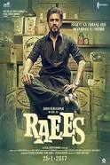

Date of Release : 25 January 2017
Cast :
- Arnold Schwarzenegger as Roman Melnyk
- Shah Rukh Khan as Raees Alam
- Mahira Khan as Aasiya Alam, Raees' wife
- Nawazuddin Siddiqui as IPS Jaideep Ambalal Majmudar
- Mohammed Zeeshan Ayyub as Sadiq, Raees' friend and confidante
- Sheeba Chaddha as Amina Alam, Raees' mother
- Shubham Chintamani as young Raees
- Shubham Tukaram as young Sadiq
Description :
Raees (English: Wealthy) is a 2017 Indian action crime thriller film directed by Rahul Dholakia and produced by Gauri Khan, Ritesh Sidhwani and Farhan Akhtar under their banners Red Chillies Entertainment and Excel Entertainment.[5] It stars Shah Rukh Khan, Mahira Khan and Nawazuddin Siddiqui.[6][7][8]
Raees was said to be based on criminal Abdul Latif's life but, the filmmakers denied this,
saying "The story of the film is a pure work of fiction, not based on any person; living or dead.
The film was released on 25 January 2017.